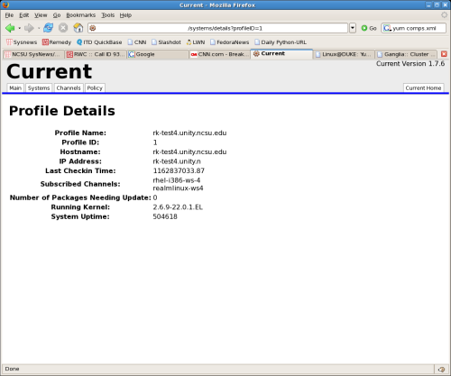

The main channels page as it is in 1.7.5. Shows all channels configured in the database.

Your session lasts 1 hour. When the cookie has timed out or missing you are redirected to the login page.
The detail page for a registered system. The System Status and Last Checkin Time are not recorded in the database as of 1.7.5.